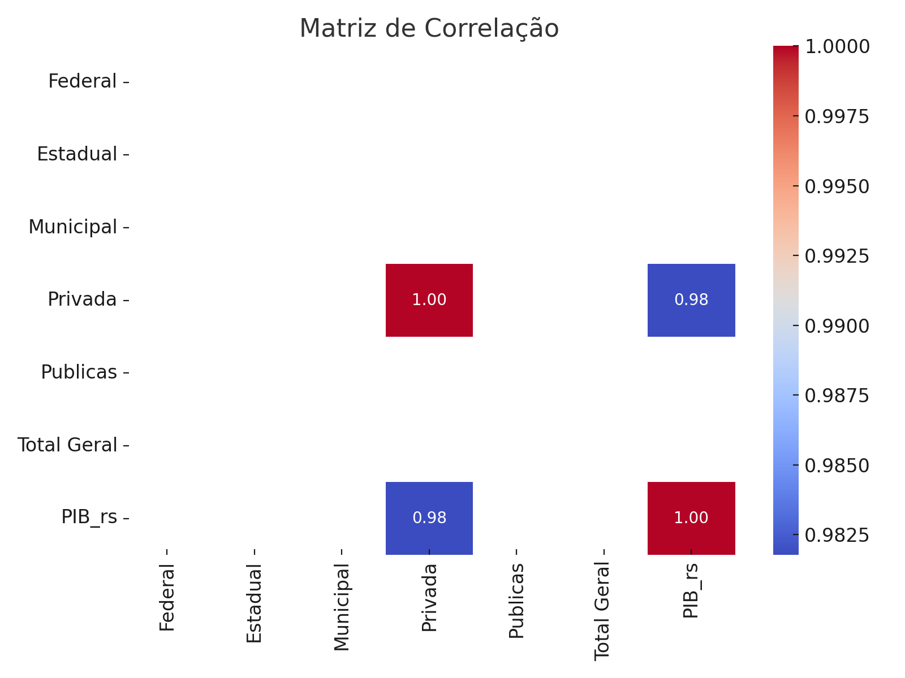

Datafólio - Educação Privada e PIB dos Estados (2021)
Resumo: Este datafólio apresenta uma análise da relação entre o número de matrículas em escolas privadas e o Produto Interno Bruto (PIB) dos estados brasileiros em 2021. Os gráficos abaixo ilustram a forte correlação positiva entre essas variáveis.
1. Matrículas Privadas x PIB Estadual

Observa-se que os estados com mais matrículas em instituições privadas também concentram os maiores PIBs. Isso sugere uma associação relevante entre renda e acesso à educação privada.
2. Mapa de Correlação
A correlação entre matrículas privadas e PIB estadual foi de 0.98, evidenciando uma relação linear muito forte.
3. Conclusão
Em 2021, a análise revelou uma forte associação estatística entre matrículas em escolas privadas e o PIB estadual. Com base em modelos de regressão linear simples, verificou-se que 95,7% da variação do PIB é explicada pelo número de alunos na rede privada. Embora não se possa inferir causalidade direta, a presença do setor privado educacional aparece como um importante indicativo de desenvolvimento econômico regional.